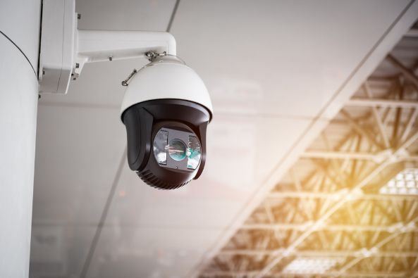
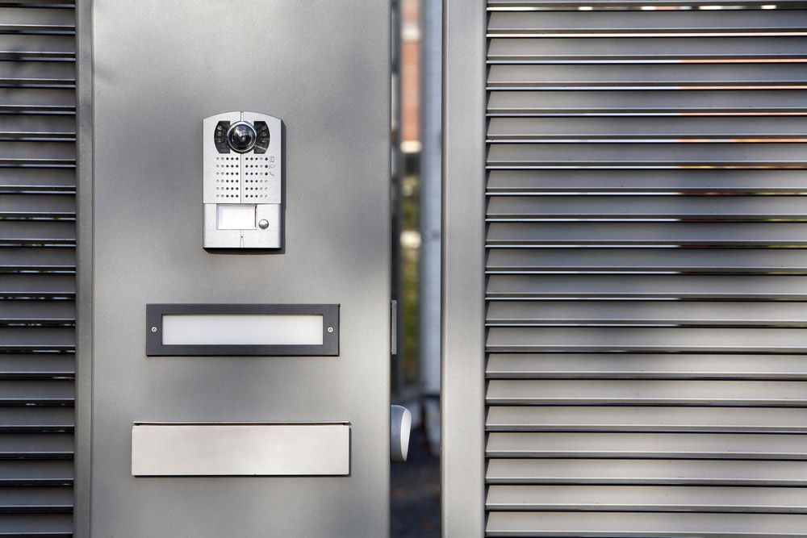

On this page
AT A GLANCE
At SPL Security Solutions, we understand that security is a top priority for property owners and businesses in Broadbeach.
Get A Free Quote Now!
Thank you for contacting SPL Security Solutions.
We will be in touch soon.

Fortifying Homes & Businesses
At SPL Security Solutions, we understand that security is a top priority for property owners and businesses in Broadbeach. Our range of locksmith services, designed to combat a wide array of security challenges, offer unbeatable protection for your property at all times. From basic key cutting and restricted key systems to advanced high-security locks and access control solutions, our team is committed to meeting the diverse needs of our clients with professionalism and expertise.
No matter how complex your security requirements are, we have the technology and experience to provide you with a tailored solution that meets your budget and exceeds your expectations. With our comprehensive range of services, we aim to provide our clients with peace of mind knowing their property is in safe hands.
For more information on our comprehensive range of locksmith services, call (07) 5588 8111.
For homeowners in Broadbeach, our residential locksmith services offer the ultimate security and convenience. We specialise in installing high-quality locks, providing durable repairs and rekeying for enhanced protection. In need of extra keys? We offer precision duplication services. Locked out? Our emergency call-out service will have you back inside before you know it.
Our reliable commercial locksmith services are available to businesses throughout Broadbeach. We provide high-security lock installations, master key systems and access control solutions to manage who can enter different parts of your property and when. A security assessment can help to identify any weaknesses in your current security measures and our emergency assistance is just a phone call away.
Broadbeach drivers can count on our automotive locksmith services for efficient and reliable assistance when they need it most. Whether you're locked out of your car or have damaged or lost your keys, our team can help. We also offer transponder key programming and ignition repair or replacement services for malfunctioning keys. Our 24/7 emergency assistance is always available.
Broadbeach businesses and organisations can enhance their security with our restricted key systems, which prevent the unauthorised duplication of keys. This ensures access is limited to authorised individuals only, providing greater control over entry points and sensitive areas. Our custom designed systems offer a reliable way to protect your assets and maintain control over your premises.
Benefit from our custom safe solutions, offering the right level of protection for all types of valuables and belongings. In Broadbeach, our services extend beyond just supply and installation; we also offer comprehensive repair and unlocking services. Our safes come in various sizes and specifications, each designed to defend against theft and environmental threats.
Our integrated security systems in Broadbeach provide businesses and homeowners with appropriate levels of protection against potential threats. Our solutions include CCTV cameras, alarm systems, access control and intercoms for comprehensive monitoring and surveillance. We can create a customised system to meet your specific security needs and budget.
In Broadbeach, we supply lock hardware ranging from sturdy deadbolts to sleek smart locks. These products offer long-lasting protection while enhancing your property’s overall security.
Broadbeach properties benefit from our premium door hardware, including robust hinges and stylish handles. Each product is manufactured for smooth functionality and enhanced durability in high-traffic areas.
We provide expertly crafted fire door hardware, smooth-operating closers, and elegant handles, merging functionality and style for modern and traditional designs in Broadbeach.
24/7 Emergency Locksmith Services
Emergencies can happen at any time and our team at SPL Security Solutions is here to help residents in Broadbeach when they need it most. Our 24/7 emergency locksmith services are available for lockouts, key replacements and other urgent situations. We understand the importance of keeping your property secure, which is why we offer rapid response times and professional solutions.
Our team also offers security assessments after a break-in and provides any necessary repairs or replacements. With our mobile vans equipped with the latest tools and technology, we can even provide on-the-spot key cutting services. Whether day or night, we're here for all your emergency locksmith needs.

Contact Details
24/7 Emergency Locksmiths or Security Tech


Trading Hours
Retail Shop

Frequently Asked Questions
-
How do smart locks work?
Smart locks use wireless protocols such as Wi-Fi or Bluetooth to communicate with applications on devices like smartphones, enabling users to lock or unlock doors remotely. They often feature additional functionalities including access logs, guest keys and voice commands.
-
How can I ensure my sliding doors are secure?
To secure sliding doors, use a door bar or a sturdy wooden dowel in the track to prevent the door from being forced open. Additionally, install an anti-lifting device to stop the door from being lifted out of its track.
Locksmith & Security Solutions Gold Coast, Brisbane & Northern NSW